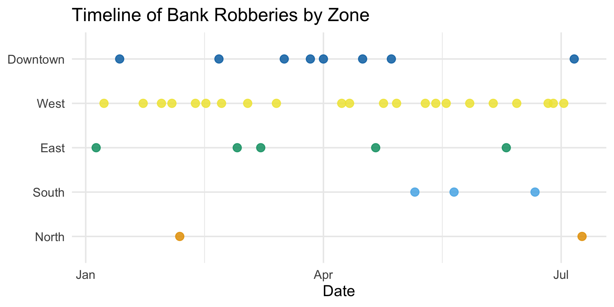
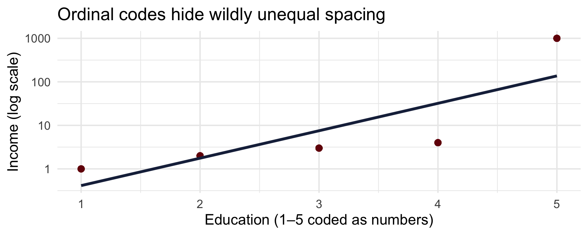
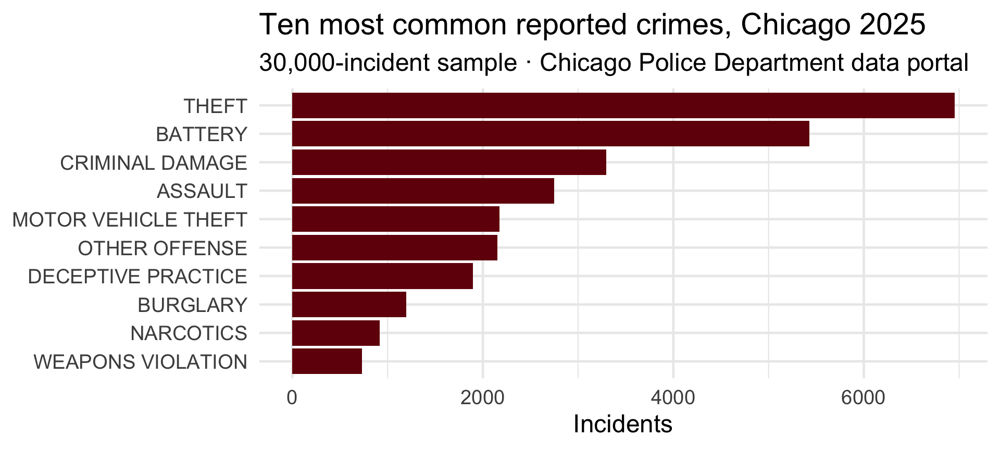

Experience with statistics (anxiety about statistics?)
Why are you here?
Future plans / goals
Today’s Roadmap & Goals
Today: a real case study, the course tour, types of data, and your first R commands.
Learning goals — by the end of tonight you can:
name the four levels of measurement and classify a variable into them
explain why a variable’s scale constrains the math and the plots you may use
run your first R commands and know what to install before next week
(No statistics background assumed. If the case study feels like magic tonight, good — by Session 12 you’ll be able to build it.)
A City Under Siege
The Situation
Over three months, 40 bank robberies strike across a city’s five zones: North, South, East, West, and Downtown.
No clear pattern. No suspects. No leads.
The robber hits banks, disappears, and resurfaces days later in a different part of the city.
Detectives are stumped. The media is escalating. Public concern is growing.
Then someone makes a call to the PD’s new crime analyst team:
“Can you help us predict where they’ll hit next?”
What Does the Data Look Like?
40 bank robberies across 5 city zones over several months:
Variable
Meaning
robbery_id
Robbery sequence
date
When the robbery occurred
zone
Which part of the city was hit
day_of_year
Numeric version of the date (for modeling time)
lat & lon
Spatial location (for mapping)
prior_robberies_in_zone
How many robberies already happened in that zone?
Before We Model, We Look
Very little information is available: no suspect descriptions, no MO patterns — just when and where.
Can we use this simple dataset to build a predictive model with statistics?
But before we even build a model, we can use basic plots to spot patterns.
Good data analysts always visualize before they model.
Timeline of Robberies by Zone — any patterns?

Watching It Unfold Over Time
Mapped Locations — any patterns?
Building a Predictive Model
We want to predict where the next robbery will occur within a short time window, based on patterns in time, location, and prior activity.
Key predictors:
Day of year (captures seasonal or other unobserved time patterns)
Prior robberies in the same zone
Zone
What Are We Trying to Predict?
We use logistic regression to predict whether the same zone will be hit again within 10 days:
Outcome:future_hit = 1 if another robbery occurs in the same zone within the next 10 days; otherwise 0
This creates a binary classification problem
(Don’t worry about the machinery today — logistic regression is Session 12. This is a preview of where we’re headed.)
Logistic Regression Results
term
estimate
std.error
statistic
p.value
scale(day_of_year)
0.034
1.055
0.032
0.975
prior_robberies_in_zone
-0.033
0.194
-0.171
0.864
zoneNorth
-17.528
3956.181
-0.004
0.996
zoneSouth
-17.563
2284.020
-0.008
0.994
zoneEast
-1.309
1.328
-0.986
0.324
zoneWest
1.114
2.053
0.543
0.587
zoneDowntown
-0.979
1.149
-0.852
0.394
Predicted Risk by Zone
Predicted Risk by Zone
Based on the model, the West Zone has the highest likelihood of being targeted next.
So what should we do with the information derived from the model?
Strategic Deployment
📍 Where: West Zone had the highest predicted probability
🚔 Action: Deploy units there for surveillance and hopeful capture
🎯 Goal: Increase arrest probability
Case Study Wrap-Up & Discussion
Outcome: Within days, officers apprehended the suspect in the predicted area as he was approaching a bank.
Statistics turned scattered crime data into a clear lead — saving time, resources, and preventing further victimization.
What data did we not use? How could we update this model as new robberies occur in real time?
What are the risks of over-relying on a model? How do we communicate uncertainty to decision-makers?
What other areas that interest you could statistics be applied to?
You Already Think Like a Bayesian
Look at what you just did with the robbery case:
You started with a vague hunch spread across five zones — statisticians call that a prior
Each new robbery was evidence that reshaped the hunch
The model’s “predicted risk by zone” is an updated belief, given the data
Sending officers to the West Zone = deciding under quantified uncertainty
The formal name is Bayesian updating. The formula arrives in Session 3; the full machinery in Session 6 — side by side with the other great tradition, the frequentist one
Course Structure
How This Course Works
Everything lives on the course website — bookmark it:
# Numeric by category → ANOVA [Session 8]# Do violent, property, and other crimes happen at different times of day?aov(hour ~ crime_category, data = crimes) |>summary()
Df Sum Sq Mean Sq F value Pr(>F)
crime_category 2 2351 1175.3 25.3 0.0000000000105 ***
Residuals 29997 1393374 46.5
---
Signif. codes: 0 '***' 0.001 '**' 0.01 '*' 0.05 '.' 0.1 ' ' 1
# Numeric × numeric → correlation [Session 10]# Across the 77 community areas: unemployment and violent crime ratecor(areas$unemployment_rate, areas$violent_rate)
[1] 0.8398579
Treating Ordinal as Numeric Can Mislead
educ <-rep(1:5, each =50) # ordinal codes 1..5income <-rep(c(1, 2, 3, 4, 1000), each =50) # HUGE jump at the topcor(educ, income) # Pearson looks "strong"
[1] 0.7088768

The correlation is “large,” but the categories are not equally spaced — code numbers ≠ measurements.
Getting You Running in R
Install R + RStudio (Before Session 2!)
Follow the step-by-step guide on the course website:
# A tibble: 3 × 3
manufacturer model hwy
<chr> <chr> <int>
1 volkswagen jetta 44
2 volkswagen new beetle 44
3 volkswagen new beetle 41
# 2. Average city mpg by classmpg |>summarize(avg_cty =mean(cty), n =n(), .by = class) |>arrange(desc(avg_cty))
# A tibble: 7 × 3
class avg_cty n
<chr> <dbl> <int>
1 subcompact 20.4 35
2 compact 20.1 47
3 midsize 18.8 41
4 minivan 15.8 11
5 2seater 15.4 5
6 suv 13.5 62
7 pickup 13 33
Coming Attractions: Real Data, All Semester
Starting next week, our running example is real: every crime reported in Chicago in 2025.

Homework (Due by 11:59 pm Sunday)
swirl tutorials — interactive R lessons inside R:
install.packages("swirl")library(swirl)swirl()
Complete these lessons from R Programming: 1) Basic Building Blocks · 2) Workspace and Files · 3) Sequences of Numbers · 4) Vectors · 5) Missing Values · 6) Subsetting Vectors · 7) Matrices and Data Frames · 8) Logic · 12) Looking at Data · 15) Base Graphics
Submit your R script files via Canvas. Then read Stanton Ch. 1 before Session 2.